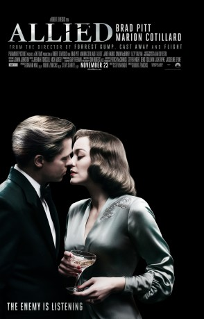

Auszeichnungen: für 1 Oscars nominiert
 gesehen am 14.04.2017
gesehen am 14.04.2017Alternativ: Allied
Auszeichnungen: für 1 Oscars nominiert gesehen am 14.04.2017
 
 IMDB-Wertung: 7.1 / 10
IMDB-Wertung: 7.1 / 10  Metascore:
Metascore: 
In the middle of World War II, in turbulent 1942, a plane flies over Morocco and drops a Royal Canadian Air Force paratrooper who comes in to land on a drop zone, somewhere in the desert dunes outside Casablanca. Just in time before anyone notices him, the fearless Wing Commander Max Vatan gets in a car and heads to the town with orders to meet Parisian Marianne Beauséjour, a skillful member of the French Resistance. On a mission to assassinate the German Ambassador in Casablanca, the two operatives must convince every one of their true feelings as a married couple, while in the background, they need to make the necessary preparations for the critical soirée. Without delay, after the success of this suicide mission, Max and Marianne flee together to England with plans on marrying and making a family, regardless of the war. Instead, heavy clouds of distrust and suspicion threaten their relationship, when Max receives a call from the Secret Service Division to inform him that his ...
Jahr: 2016
Dauer: 124 Minuten
FSK: 12
Land: England Studio: Paramount PicturesTonspuren: DD5.1 - ,
Untertitel: Deutsch, Englisch,
Auflösung: 1080p (1920x800) Größe: 5724 MB
Genre: Action, Thriller, Drama, Krieg, Liebe
Regisseur:  Robert Zemeckis
Robert Zemeckis
Drehbuch: Woody Allen
Soundtrack:
Darsteller:
 Brad Pitt als Max Vatan
Brad Pitt als Max Vatan Marion Cotillard als Marianne Beauséjour
Marion Cotillard als Marianne Beauséjour Camille Cottin als Monique
Camille Cottin als Monique August Diehl als Hobar
August Diehl als Hobar Daniel Betts als George Kavanagh
Daniel Betts als George Kavanagh Jared Harris als Frank Heslop
Jared Harris als Frank Heslop Lizzy Caplan als Bridget Vatan
Lizzy Caplan als Bridget Vatan Charlotte Hope als Louise
Charlotte Hope als Louise Marion Bailey als Mrs. Sinclair
Marion Bailey als Mrs. Sinclair Simon McBurney als S.O.E. Official
Simon McBurney als S.O.E. Official Matthew Goode als Guy Sangster
Matthew Goode als Guy Sangster Anton Lesser als Emmanuel Lombard
Anton Lesser als Emmanuel Lombard Christian Rubeck als Lars
Christian Rubeck als Lars Raphael Desprez als Degas
Raphael Desprez als Degas Raffey Cassidy als Anna
Raffey Cassidy als Anna Lasco Atkins als Bohemian Man , uncredited
Lasco Atkins als Bohemian Man , uncredited Graham Curry als RAF Hospital Patient , uncredited
Graham Curry als RAF Hospital Patient , uncredited Tom Dab als German Officer , uncredited
Tom Dab als German Officer , uncredited Roman Green als Amputee Hospital Patient , uncredited
Roman Green als Amputee Hospital Patient , uncredited Michael Haydon als Newspaper man , uncredited
Michael Haydon als Newspaper man , uncredited Sophie Karl als Female Geek , uncredited
Sophie Karl als Female Geek , uncredited Alex Lorre als Bohemian man , uncredited
Alex Lorre als Bohemian man , uncreditedDatei: X:\2016(A-F)\Allied Vertraute Fremde (2016, FSK12, 1920x800).mkv seit 15.03.2017
Festplatte: HD 2016(A-Z)
 Es gibt insgesamt 147 Filme in der Gruppe '2016(A-F)'
Es gibt insgesamt 147 Filme in der Gruppe '2016(A-F)'